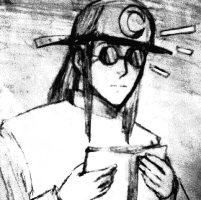

Roshal
Date of birth: 11 July
Place of birth: Unknown
Blood type: O
Planet: Earth
Other: He loves books and women undies
Meet Roshal
Roshal is a young freelance detective, he's responsible for finding small things people find unimportant. Mostly his clients are old ladies or young women.
His believes are odd, he once read about an ancient religion in a book he found inside a bag he took by mistake. Because of that religion he started to work as a freelance detective. And because of that bag he found another purpose for his life, he fell in love with women's underwear.
(see: revelation comic page)
Physical description
He wears a cap with a crescent moon, he has long black hair. Roshal never removes his glasses. I mean like NEVER!
Roshal's Philosophy
He thinks that beauty is hidden in the small things we barley notice, that includes small pieces of a woman's underwear. He is not ashamed of his small desires and says that this is a proof that he is honest to himself. Well, people fear things.
Roshal loves making friendships with female teachers and female nurses as he loves chit-chatting and snooping about miniskirts.